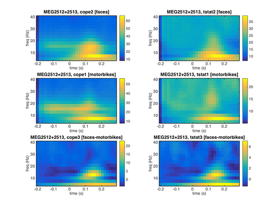

OAT 2 - Sensorspace Time-Frequency Analysis
In this practical we will work with a single subject's data from an emotional faces task (data courtesy of Susie Murphy) and perform an Time-Frequency analysis in sensor space.
- Set-up an OAT Analysis: source_recon and first_level
- Compute a first level GLM analysis with OAT
- Visualise results with FieldTrip
- Compute a topoplot averaged within a time-frequency window
Please read each cell in turn before copying its contents either directly into the MatLab console or your own blank script. By the end of this session you should have created your own template analysis script which can be applied to further analysis.
You will need the following files from the example_data directory:
- Aface_meg1.mat - an SPM MEEG object that has continuous data that has already been SSS Maxfiltered and downsampled to 250 Hz.
- eAface_meg1.mat - an SPM MEEG object that has the same data epoched into the different task conditions.
Contents
- INITIALISE GLOBAL SETTINGS FOR THIS ANALYSIS
- SET UP THE SUBJECTS FOR THE ANALYSIS
- SETUP SENSOR SPACE SOURCE RECON
- SETUP THE TIME-FREQUENCY DECOMPOSITION
- SETUP THE FIRST LEVEL GLM
- RUN OAT
- READ REPORT
- GENERATE ALTERNATIVE REPORT OF TIME-FREQUENCY RESULTS
- RESULTS
- VISUALISE USING FIELDTRIP
- CREATE A TOPOPLOT AVERAGED WITHIN A TF WINDOW
INITIALISE GLOBAL SETTINGS FOR THIS ANALYSIS
This cell sets the directory that OAT will work in. Change the workingdir variable to correspond to the correct directory on your computer before running the cell.
% directory where the data is: datadir = fullfile(osldir,'example_data','faces_singlesubject','spm_files'); % directory to put the analysis in workingdir = fullfile(osldir,'example_data','faces_singlesubject');
SET UP THE SUBJECTS FOR THE ANALYSIS
Specify a list of the SPM input files. Note that here we only have 1 subject, but more generally there would be more than one. For example:
spm_files_continuous{1} = [workingdir '/sub1_face_sss.mat'];
spm_files_continuous{2} = [workingdir '/sub2_face_sss.mat'];
etc...
% clear old spm files clear spm_files_continuous spm_files_epoched spm_files_continuous{1}=fullfile(datadir,'Aface_meg1.mat'); spm_files_epoched{1}=fullfile(datadir,'eAface_meg1.mat');
SETUP SENSOR SPACE SOURCE RECON
This stage sets up the source reconstruction stage of an OAT analysis. The source_recon stage is always run even for a sensor space analysis, though in these cases it simply prepares the data for the subsequent OAT stages.
In this example we define our input files (D_continuous and D_epoched) and conditions before setting a time frequency window from -200ms before stimulus onset, to 400ms after and from 4Hz to 100Hz. The source recon method is set to 'none' as we are performing a sensorspace analysis. The oat.source_recon.dirname is where all the analysis results will be stored. This includes all the intermediate steps, diagnostic plots and final results.
oat=[]; oat.source_recon.D_epoched=spm_files_epoched; % this is passed in so that the bad trials and bad channels can be read out oat.source_recon.D_continuous=spm_files_continuous; oat.source_recon.conditions={'Motorbike','Neutral face','Happy face','Fearful face'}; oat.source_recon.freq_range=[4 100]; % frequency range in Hz oat.source_recon.time_range=[-0.2 0.4]; oat.source_recon.method='none'; oat.source_recon.normalise_method='none'; % Set this to something specific, this the directory where the OAT will be % stored oat.source_recon.dirname = fullfile(workingdir,'sensorspace_tf');
SETUP THE TIME-FREQUENCY DECOMPOSITION
Next we set up a single subject trial-wise GLM on our prepared data. Firstly the time-frequency parameters are defined, these must be within the bounds of the time-frequency window set in the source recon stage.
Note the following settings in particular:
- oat.first_level.tf_method - This indicates we are doing a TF analysis using hilbert or morlet transform (or is set to 'none' if doing a time-domain ERF analysis)
- oat.first_level.tf_freq_range - This indicates the overall freq range.
- oat.first_level.tf_num_freqs - This indicates the number of freq bins to use within the overall freq range
- oat.first_level.tf_hilbert_freq_res - This indicates the bandwidth of the freq bins, if doing a hilbert transform
- oat.first_level.time_range - This indicates the time range. NOTE that this needs to be smaller than oat.source_recon.time_range to remove edge effects
Note that you can also do time-frequency analyses outside of OAT by passing an SPM MEEG object straight into the osl_tf_transform function.
We have also set the baseline correction to be turned off for the third contrast, [-3 1 1 1] (this is often a good idea for differential contrasts, for which we do not need to do baseline correction):
- oat.first_level.bc=[1 1 0]
oat.first_level.tf_method='morlet'; % can be morlet or hilbert oat.first_level.tf_freq_range=[5 40]; % frequency range in Hz oat.first_level.time_range=[-0.2 0.3]; % need to make this time range smallet than oat.source_recon.time_range to remove edge effects oat.first_level.tf_num_freqs=14; % we are keeping this unusally low in the practical for the sake of speed %oat.first_level.tf_hilbert_freq_res=8; % NOTE that you can also set HILBERT freq ranges explicitly, e.g.: % |oat.first_level.tf_hilbert_freq_ranges=[[4 8];[8 12];[12 16];[16 20];[20 24];[24 30]];| % frequency range in Hz oat.first_level.post_tf_downsample_factor=4; % does downsampling after the TF decomposition oat.first_level.bc=[1 1 0]; % specifies whether or not baseline correction is done for the different contrasts
SETUP THE FIRST LEVEL GLM
This cell defines the GLM parameters for the first level analysis. Critically this includes the design matrix (in Xsummary) and the contrast matrix. Xsummary is a parsimonious description of the design matrix. It contains values Xsummary{reg,cond}, where reg is a regressor index number and cond indexes different experimental conditions (e.g. pictures of faces, pictures of motorbikes). This will be used (by expanding the conditions over trials) to create the (num_regressors x num_trials) design matrix.
Each contrast is a vector containing a weight per condition defining how the condition parameter estimates are to be compared. Each vector will produce a different t-map across the sensors. Contrasts 1 and 2 describe positive correlations between each sensor's activity and the presence of a motorbike or face stimulus respectively. Contrast 3 tests whether each sensor's activity is larger for faces than motorbikes.
Xsummary={};
Xsummary{1}=[1 0 0 0];
Xsummary{2}=[0 1 0 0];
Xsummary{3}=[0 0 1 0];
Xsummary{4}=[0 0 0 1];
oat.first_level.design_matrix_summary=Xsummary;
% contrasts to be calculated:
oat.first_level.contrast={};
oat.first_level.contrast{1}=[3 0 0 0]'; % motorbikes
oat.first_level.contrast{2}=[0 1 1 1]'; % faces
oat.first_level.contrast{3}=[-3 1 1 1]'; % faces-motorbikes
oat.first_level.contrast_name{1}='motorbikes';
oat.first_level.contrast_name{2}='faces';
oat.first_level.contrast_name{3}='faces-motorbikes';
oat.first_level.cope_type='cope';
oat.first_level.report.first_level_cons_to_do=[2 1 3];
oat.first_level.report.modality_to_do='MEGPLANAR';
oat.first_level.bc=[0 0 0];
RUN OAT
We now run the source-recon and first-level OAT stages
OAT will produce and close a number of figures as it processes, we will discuss what they mean once it has finished (this takes a couple of minutes)
oat.to_do=[1 1 0 0]; oat = osl_run_oat(oat);
Detected Elekta Neuromag 306 data. Using default Elekta Neuromag 306 settings.
Warning: oat.source_recon.modalities not set, or not set properly. Will set to
default:MEGPLANARMEGMAG
oat.source_recon.D_epoched set. OAT will do an epoched data trial-wise GLM
*************************************************************
Running source_recon
*************************************************************
%%%%%%%%%%%%%%%%%%%%%%%%%%%%%%%%%%%%%%%%%%%%%%%%%%%%%%%%%%%%%%%%%%%%%%%%%%%%%%%%%%%%%%%%%%%%%%
%%%%%%%%%%%%%%%%%%%%%%% RUNNING OAT SOURCE RECON (SENSOR SPACE SETUP) ON SESS = 1 %%%%%%%%%%%%%%%%%%%%%%%
Using continuous data as input
Using epoched data as input
Preparing source recon stage for /Users/andrew/toolboxes/osl/example_data/faces_singlesubject/spm_files/Aface_meg1.mat
Will be designated session1
SPM12: spm_eeg_copy (v7132) 12:51:06 - 06/11/2019
========================================================================
SPM12: spm_eeg_copy (v7132) 12:51:09 - 06/11/2019
========================================================================
Temporal filtering...
SPM12: spm_eeg_filter (v7125) 12:51:12 - 06/11/2019
========================================================================
Filter bandpass (but, twopass) : [4 100] Hz
Completed : 12:51:22 - 06/11/2019
Epoching...
Doing no within-trial baseline correction at the point of epoching
SPM12: spm_eeg_epochs (v7125) 12:51:22 - 06/11/2019
========================================================================
Data type is missing or incorrect, assigning default.
Baseline correction : 0
Number of trials : 360
Completed : 12:51:31 - 06/11/2019
Changing the number of channels, so discarding online montages.
SPM12: spm_eeg_copy (v7132) 12:51:41 - 06/11/2019
========================================================================
Saving source recon (sensorspace setup) results: session1_recon
*************************************************************
Running first_level
*************************************************************
%%%%%%%%%%%%%%%%%%%%%%%%%%%%%%%%%%%%%%%%%%%%%%%%%%%%%%%%%%%%%%%%%%%%%%%%%%%%%%%%%%%%%%%%%%%%%%
%%%%%%%%%%%%%%%%%%%%%%% RUNNING OAT FIRST LEVEL ON SESS = 1 %%%%%%%%%%%%%%%%%%%%%%%
ans =
'/Users/andrew/toolboxes/osl/example_data/faces_singlesubject/sensorspace_tf.oat/efsession1_spm_meeg.mat'
SPM12: spm_eeg_copy (v7132) 12:51:51 - 06/11/2019
========================================================================
ans =
'/Users/andrew/toolboxes/osl/example_data/faces_singlesubject/sensorspace_tf.oat/efsession1_spm_meeg_firstlevel.mat'
Working in sensor space
Creating Morlet basis set. If you are seeing message many times, you may wish to pass a morlet basis set to 'osl_tf_transform'
USING MORLET TF
Freqs: 5 7.69231 10.3846 13.0769 15.7692 18.4615 21.1538 23.8462 26.5385 29.2308 31.9231 34.6154 37.3077 40
Reconstruct time courses and computing stats for dataset session1_recon
CAREFUL: are you sure you want no first_level.do_glm_demean flag on with no constant regressors in the design matrix!!!!?
State 1 is active for 213.6secs
First level COPEs outputted will have dimension Nvoxels x Ntpts x Ncontrasts x Nfreqs:
306 31 3 14
Doing T-F transform in sensor space on [3.65384615384615 6.34615384615385] Hz...
size(sens_data_tf)=[325 38 356 1], (nsens x ntpts x ntri x nfreq)
Doing Morlet transform...
100.00 %
- estimated time to finish is 0 seconds
Doing T-F transform in sensor space on [6.34615384615385 9.03846153846154] Hz...
size(sens_data_tf)=[325 38 356 1], (nsens x ntpts x ntri x nfreq)
Doing Morlet transform...
100.00 %
- estimated time to finish is 0 seconds
Doing T-F transform in sensor space on [9.03846153846154 11.7307692307692] Hz...
size(sens_data_tf)=[325 38 356 1], (nsens x ntpts x ntri x nfreq)
Doing Morlet transform...
100.00 %
- estimated time to finish is 0 seconds
Doing T-F transform in sensor space on [11.7307692307692 14.4230769230769] Hz...
size(sens_data_tf)=[325 38 356 1], (nsens x ntpts x ntri x nfreq)
Doing Morlet transform...
100.00 %
- estimated time to finish is 0 seconds
Doing T-F transform in sensor space on [14.4230769230769 17.1153846153846] Hz...
size(sens_data_tf)=[325 38 356 1], (nsens x ntpts x ntri x nfreq)
Doing Morlet transform...
100.00 %
- estimated time to finish is 0 seconds
Doing T-F transform in sensor space on [17.1153846153846 19.8076923076923] Hz...
size(sens_data_tf)=[325 38 356 1], (nsens x ntpts x ntri x nfreq)
Doing Morlet transform...
100.00 %
- estimated time to finish is 0 seconds
Doing T-F transform in sensor space on [19.8076923076923 22.5] Hz...
size(sens_data_tf)=[325 38 356 1], (nsens x ntpts x ntri x nfreq)
Doing Morlet transform...
100.00 %
- estimated time to finish is 0 seconds
Doing T-F transform in sensor space on [22.5 25.1923076923077] Hz...
size(sens_data_tf)=[325 38 356 1], (nsens x ntpts x ntri x nfreq)
Doing Morlet transform...
100.00 %
- estimated time to finish is 0 seconds
Doing T-F transform in sensor space on [25.1923076923077 27.8846153846154] Hz...
size(sens_data_tf)=[325 38 356 1], (nsens x ntpts x ntri x nfreq)
Doing Morlet transform...
100.00 %
- estimated time to finish is 0 seconds
Doing T-F transform in sensor space on [27.8846153846154 30.5769230769231] Hz...
size(sens_data_tf)=[325 38 356 1], (nsens x ntpts x ntri x nfreq)
Doing Morlet transform...
100.00 %
- estimated time to finish is 0 seconds
Doing T-F transform in sensor space on [30.5769230769231 33.2692307692308] Hz...
size(sens_data_tf)=[325 38 356 1], (nsens x ntpts x ntri x nfreq)
Doing Morlet transform...
100.00 %
- estimated time to finish is 0 seconds
Doing T-F transform in sensor space on [33.2692307692308 35.9615384615385] Hz...
size(sens_data_tf)=[325 38 356 1], (nsens x ntpts x ntri x nfreq)
Doing Morlet transform...
100.00 %
- estimated time to finish is 0 seconds
Doing T-F transform in sensor space on [35.9615384615385 38.6538461538462] Hz...
size(sens_data_tf)=[325 38 356 1], (nsens x ntpts x ntri x nfreq)
Doing Morlet transform...
100.00 %
- estimated time to finish is 0 seconds
Doing T-F transform in sensor space on [38.6538461538462 41.3461538461538] Hz...
size(sens_data_tf)=[325 38 356 1], (nsens x ntpts x ntri x nfreq)
Doing Morlet transform...
100.00 %
- estimated time to finish is 0 seconds
reading layout from file /Users/andrew/toolboxes/osl/layouts/neuromag306planar3.lay
the call to "ft_prepare_layout" took 0 seconds and required the additional allocation of an estimated NaN MB
reading layout from file /Users/andrew/toolboxes/osl/layouts/neuromag306planar2.lay
the call to "ft_prepare_layout" took 0 seconds and required the additional allocation of an estimated NaN MB
reading layout from file /Users/andrew/toolboxes/osl/layouts/neuromag306mag.lay
the call to "ft_prepare_layout" took 0 seconds and required the additional allocation of an estimated NaN MB
reading layout from file /Users/andrew/toolboxes/osl/layouts/neuromag306cmb.lay
the call to "ft_prepare_layout" took 0 seconds and required the additional allocation of an estimated NaN MB
Averaging the (A)COPEs for orthogonal planar gradiometers
Changing the number of channels, so discarding online montages.
Changing the number of channels, so discarding online montages.
Saving statistics in file /Users/andrew/toolboxes/osl/example_data/faces_singlesubject/sensorspace_tf.oat/session1_first_level
Error using alternatePrintPath
Java exception occurred:
com.mathworks.hg.util.OutputHelperProcessingException: Problem while processing in an OutputHelper. Caught OutOfMemoryError: Java heap space on thread AWT-EventQueue-0
at com.mathworks.hg.util.HGGetframeOutputHelper.generateOutput(HGGetframeOutputHelper.java:154)
at com.mathworks.hg.util.OutputHelper.generateOutput(OutputHelper.java:76)
at com.mathworks.hg.util.ImageGrabber.generateOutput(ImageGrabber.java:63)
at com.mathworks.hg.util.ImageGrabber.grab(ImageGrabber.java:32)
at com.mathworks.hg.util.BufferedImageGrabber.captureImage(BufferedImageGrabber.java:48)
at com.mathworks.hg.peer.FigureClientProxyPanel.setPaintDisabled(FigureClientProxyPanel.java:66)
at com.mathworks.hg.peer.PaintDisabled.setPaintDisabled(PaintDisabled.java:60)
at com.mathworks.hg.peer.HeavyweightLightweightContainerFactory$FigurePanelContainerLight.disablePaint(HeavyweightLightweightContainerFactory.java:326)
at com.mathworks.hg.peer.HeavyweightLightweightContainerFactory$FigurePanelContainerLight.doSetPaintDisabled(HeavyweightLightweightContainerFactory.java:363)
at com.mathworks.hg.peer.HeavyweightLightweightContainerFactory$FigurePanelContainerLight.setPaintDisabled(HeavyweightLightweightContainerFactory.java:387)
at sun.reflect.NativeMethodAccessorImpl.invoke0(Native Method)
at sun.reflect.NativeMethodAccessorImpl.invoke(NativeMethodAccessorImpl.java:62)
at sun.reflect.DelegatingMethodAccessorImpl.invoke(DelegatingMethodAccessorImpl.java:43)
at java.lang.reflect.Method.invoke(Method.java:498)
at com.mathworks.jmi.AWTUtilities$Invoker$3$1.call(AWTUtilities.java:525)
at com.mathworks.mvm.context.ThreadContext.callWithContext(ThreadContext.java:105)
at com.mathworks.mvm.context.MvmContext.callWithContext(MvmContext.java:113)
at com.mathworks.jmi.AWTUtilities$Invoker$3.runWithOutput(AWTUtilities.java:522)
at com.mathworks.jmi.AWTUtilities$Invoker$2.watchedRun(AWTUtilities.java:475)
at com.mathworks.jmi.AWTUtilities$WatchedRunnable.run(AWTUtilities.java:436)
at java.awt.event.InvocationEvent.dispatch(InvocationEvent.java:311)
at java.awt.EventQueue.dispatchEventImpl(EventQueue.java:758)
at java.awt.EventQueue.access$500(EventQueue.java:97)
at java.awt.EventQueue$3.run(EventQueue.java:709)
at java.awt.EventQueue$3.run(EventQueue.java:703)
at java.security.AccessController.doPrivileged(Native Method)
at java.security.ProtectionDomain$JavaSecurityAccessImpl.doIntersectionPrivilege(ProtectionDomain.java:74)
at java.awt.EventQueue.dispatchEvent(EventQueue.java:728)
at java.awt.EventDispatchThread.pumpOneEventForFilters(EventDispatchThread.java:205)
at java.awt.EventDispatchThread.pumpEventsForFilter(EventDispatchThread.java:116)
at java.awt.EventDispatchThread.pumpEventsForHierarchy(EventDispatchThread.java:105)
at java.awt.EventDispatchThread.pumpEvents(EventDispatchThread.java:101)
at java.awt.EventDispatchThread.pumpEvents(EventDispatchThread.java:93)
at java.awt.EventDispatchThread.run(EventDispatchThread.java:82)
Caused by: com.jogamp.opengl.GLException: Caught OutOfMemoryError: Java heap space on thread AWT-EventQueue-0
at com.jogamp.opengl.GLException.newGLException(GLException.java:76)
at jogamp.opengl.GLDrawableHelper.invokeGLImpl(GLDrawableHelper.java:1311)
at jogamp.opengl.GLDrawableHelper.invokeGL(GLDrawableHelper.java:1131)
at com.jogamp.opengl.awt.GLJPanel$OffscreenBackend.doPlainPaint(GLJPanel.java:2110)
at com.jogamp.opengl.awt.GLJPanel.print(GLJPanel.java:919)
at com.mathworks.hg.peer.JavaSceneServerGLJPanel.print(JavaSceneServerGLJPanel.java:134)
at javax.swing.JComponent.printAll(JComponent.java:1148)
at com.mathworks.hg.peer.HeavyweightLightweightContainerFactory$PrintHelper.printAllComponents(HeavyweightLightweightContainerFactory.java:512)
at com.mathworks.hg.peer.HeavyweightLightweightContainerFactory$FigurePanelContainerLight.printAll(HeavyweightLightweightContainerFactory.java:495)
at javax.swing.JComponent.paintChildren(JComponent.java:896)
at javax.swing.JComponent.printChildren(JComponent.java:1233)
at javax.swing.JComponent.paint(JComponent.java:1068)
at com.mathworks.hg.peer.FigureClientProxyPanel.paint(FigureClientProxyPanel.java:89)
at javax.swing.JComponent.print(JComponent.java:1202)
at javax.swing.JComponent.printAll(JComponent.java:1148)
at com.mathworks.hg.util.HGGetframeOutputHelper$1.run(HGGetframeOutputHelper.java:129)
at com.mathworks.jmi.AWTUtilities$Invoker$5$1.run(AWTUtilities.java:591)
at com.mathworks.mvm.context.ThreadContext$1.call(ThreadContext.java:76)
at com.mathworks.mvm.context.ThreadContext.callWithContext(ThreadContext.java:105)
at com.mathworks.mvm.context.ThreadContext.runWithContext(ThreadContext.java:73)
at com.mathworks.mvm.context.MvmContext.runWithContext(MvmContext.java:107)
at com.mathworks.jmi.AWTUtilities$Invoker$5.runWithOutput(AWTUtilities.java:588)
at com.mathworks.jmi.AWTUtilities$Invoker$2.watchedRun(AWTUtilities.java:475)
at com.mathworks.jmi.AWTUtilities$WatchedRunnable.run(AWTUtilities.java:436)
at com.mathworks.jmi.AWTUtilities$Invoker.invoke(AWTUtilities.java:490)
at com.mathworks.jmi.AWTUtilities.invokeAndWait(AWTUtilities.java:304)
at com.mathworks.hg.util.HGGetframeOutputHelper.generateOutput(HGGetframeOutputHelper.java:142)
... 33 more
Caused by: java.lang.OutOfMemoryError: Java heap space
at java.awt.image.DataBufferInt.<init>(DataBufferInt.java:75)
at java.awt.image.Raster.createPackedRaster(Raster.java:467)
at java.awt.image.DirectColorModel.createCompatibleWritableRaster(DirectColorModel.java:1032)
at java.awt.image.BufferedImage.<init>(BufferedImage.java:324)
at com.jogamp.opengl.util.awt.AWTGLPixelBuffer$AWTGLPixelBufferProvider.allocate(AWTGLPixelBuffer.java:239)
at jogamp.opengl.awt.AWTTilePainter$1.display(AWTTilePainter.java:294)
at com.jogamp.opengl.util.TileRendererBase$1.display(TileRendererBase.java:608)
at jogamp.opengl.GLDrawableHelper.displayImpl(GLDrawableHelper.java:691)
at jogamp.opengl.GLDrawableHelper.display(GLDrawableHelper.java:673)
at com.jogamp.opengl.awt.GLJPanel$Updater.plainPaint(GLJPanel.java:1450)
at com.jogamp.opengl.awt.GLJPanel$11.run(GLJPanel.java:1527)
at jogamp.opengl.GLDrawableHelper.invokeGLImpl(GLDrawableHelper.java:1277)
at jogamp.opengl.GLDrawableHelper.invokeGL(GLDrawableHelper.java:1131)
at com.jogamp.opengl.awt.GLJPanel$OffscreenBackend.doPlainPaint(GLJPanel.java:2110)
at com.jogamp.opengl.awt.GLJPanel.print(GLJPanel.java:919)
at com.mathworks.hg.peer.JavaSceneServerGLJPanel.print(JavaSceneServerGLJPanel.java:134)
at javax.swing.JComponent.printAll(JComponent.java:1148)
at com.mathworks.hg.peer.HeavyweightLightweightContainerFactory$PrintHelper.printAllComponents(HeavyweightLightweightContainerFactory.java:512)
at com.mathworks.hg.peer.HeavyweightLightweightContainerFactory$FigurePanelContainerLight.printAll(HeavyweightLightweightContainerFactory.java:495)
at javax.swing.JComponent.paintChildren(JComponent.java:896)
at javax.swing.JComponent.printChildren(JComponent.java:1233)
at javax.swing.JComponent.paint(JComponent.java:1068)
at com.mathworks.hg.peer.FigureClientProxyPanel.paint(FigureClientProxyPanel.java:89)
at javax.swing.JComponent.print(JComponent.java:1202)
at javax.swing.JComponent.printAll(JComponent.java:1148)
at com.mathworks.hg.util.HGGetframeOutputHelper$1.run(HGGetframeOutputHelper.java:129)
at com.mathworks.jmi.AWTUtilities$Invoker$5$1.run(AWTUtilities.java:591)
at com.mathworks.mvm.context.ThreadContext$1.call(ThreadContext.java:76)
at com.mathworks.mvm.context.ThreadContext.callWithContext(ThreadContext.java:105)
at com.mathworks.mvm.context.ThreadContext.runWithContext(ThreadContext.java:73)
at com.mathworks.mvm.context.MvmContext.runWithContext(MvmContext.java:107)
at com.mathworks.jmi.AWTUtilities$Invoker$5.runWithOutput(AWTUtilities.java:588)
Error in alternatePrintPath
Error in print (line 82)
pj = alternatePrintPath(pj);
Error in osl_report_print_figs (line 34)
print(fighands(ii), ['-d' report.fig_format], sprintf('-r%d',r), report.plot_names{report.index});
Error in oat_first_level_stats_report (line 103)
report=osl_report_print_figs(report);
Error in oat_run_first_level_epoched (line 1210)
report = oat_first_level_stats_report(oat,first_level_results,'',first_level_results.report);
Error in oat_run_first_level (line 28)
[results_fnames results] = oat_run_first_level_epoched(oat); % Do time-wise analysis state-wise
Error in osl_run_oat (line 93)
[results_fnames results] = oat_run_first_level(oat);
Error in osl_example_oat_2_sensorspace_tf (line 154)
oat = osl_run_oat(oat);
Error in evalmxdom>instrumentAndRun (line 109)
text = evalc(evalstr);
Error in evalmxdom (line 21)
[data,text,laste] = instrumentAndRun(file,cellBoundaries,imageDir,imagePrefix,options);
Error in publish
Error in osl_publish (line 52)
output_html = publish( filename, opt )READ REPORT
OAT runs the GLM for every time point and frequency band across all sensors.
OAT will create a report containing a summary of the first level analysis results (as well as some diagnostic figures from the source reconstruction). The specific content of this report depends upon settings in oat.first_level.report:
- oat.first_level.report.modality_to_do - e.g. MEGPLANAR, MEGMAG (only in sensor space)
- oat.first_level.report.first_level_cons_to_do; - plots only these contrasts and uses first one in list to determine max vox, time, freq
- oat.first_level.report.time_range; - to determine max vox, time, freq
- oat.first_level.report.freq_range; - to determine max vox, time, freq
Open the report indicated in oat.results.report in a web browser (there will also be a link to this available in the Matlab output). This displays the diagnostic plots.
- At the top of the file is a link to oat.results.logfile (a file containing the matlab output) - you should check this for any errors or unusual warnings.
- Then there will be a list of reports for each OAT stage.
- Click on the "First level (epoched)" link to bring up the first level reports.
This brings up a list of sessions. Here we have only preprocessed one session. Click on the "Session 1 report" link to bring up the diagnostic plots for session 1 and take a look.
The settings in the current OAT will generate an image with the COPE and t-stats for all three contrasts from the sensor with the maximum statistic for contrast 2 (faces) from the planar gradiometers as seen below

disp(oat.results.report.html_fname); % show path to web page report
GENERATE ALTERNATIVE REPORT OF TIME-FREQUENCY RESULTS
The oat_first_level_stats_report function can be used to produce alternative OAT reports using an already run OAT.
Here, we will create a new report where we have changed the report to view the results from the magnetometers (the default report showed results from MEGPLANAR), and to only show the motorbikes vs. faces contrast (contrast 3).
% Report settings oat.first_level.report.modality_to_do='MEGMAG'; oat.first_level.report.first_level_cons_to_do=[3]; % Regenerate report report = oat_first_level_stats_report(oat,oat.first_level.results_fnames{1}); % Open the report in matlabs html browser open(report.html_fname);
RESULTS
The results are stored in the oat structure and the can be loaded back into matlab using oat_load_results.
This is useful for checking over results of the GLM or as the basis for further analyses.
disp('oat.results:'); disp(oat.results); % load first-level GLM result stats1=oat_load_results(oat,oat.first_level.results_fnames{1});
VISUALISE USING FIELDTRIP
A lot of the visualisations work using functions from fieldtrip. These offer a wide range of visualisation options and are high customisable. Here we will use an OSL function which plots an OAT result in a fieldtrip multiplot.
We will plot the T-stat time-frequency results for the faces contrast across all the Planar Gradiometers by defining the following options and calling oat_stats_multiplotTFR.
Note that this produces an interactive figure, with which you can:
- draw around a set of sensors
- click in the drawn box to produce a plot of the time series
- on the time series plot you can draw a time window
- and click in the window to create a topoplot averaged over that time window (which is itself interactive....!)
S2=[];
S2.oat=oat;
S2.stats_fname=oat.first_level.results_fnames{1};
S2.modality='MEGPLANAR';
S2.first_level_contrast=[2];
S2.cfg.colorbar='yes';
S2.cfg.zlim = [0 35];
S2.view_cope=0;
% calculate t-stat using contrast of absolute value of parameter estimates
[cfg, data]=osl_stats_multiplotTFR(S2);
title([oat.first_level.contrast_name{S2.first_level_contrast}]);
CREATE A TOPOPLOT AVERAGED WITHIN A TF WINDOW
We often want to focus our visualisations on specific points in time or frequency rather than looking at the everything at once.
The following code calls creates a topoplot from the same results as the previous section, but now averages the results over 130 to 160 ms, and 8 to 12 Hz.
cfg.xlim = [0.13 0.16]; % time window in secs cfg.ylim = [8 12]; % freq window in Hz cfg.interactive = 'no'; figure; ft_topoplotTFR(cfg,data); title([oat.first_level.contrast_name{S2.first_level_contrast}]);